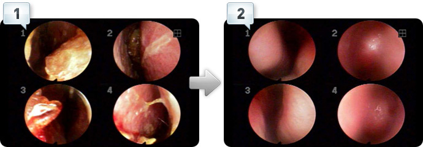
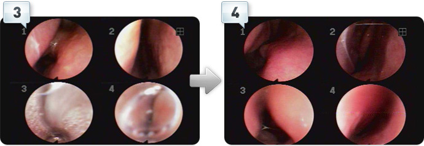

코막힘과 콧물, 반복되는 이유를 함께 찾습니다.
- 01언제 불편한지
- 02코 안의 상태
- 03치료와 생활관리
| 구분 | 살펴볼 점 | 알려주실 내용 |
|---|---|---|
| 증상 | 코막힘·콧물·재채기 | 특히 불편한 시간 |
| 진찰 | 코 안의 상태 | 이전에 받은 검사 |
| 일상 | 수면과 생활의 불편 | 줄이고 싶은 불편 |
궁금한 항목을 펼쳐보세요.
필요한 설명과 자료를 주제별로 확인할 수 있습니다.
01비염?＋
비염?
전화, 문자, 카카오톡, 네이버. 편한 방법으로 문의주시고, 예약하세요.
02비염, 치료와 관리의 관점＋
코질환을 치료하다보면 다음과 같은 질문을 가장 흔하게 듣습니다.
“우리 아이의 비염은 완치가 가능할까요?”
“저는 어렸을 적부터 앓아왔는데 한약을 먹는다고 낫겠어요?”
오죽 재발을 잘하고 얼마나 치료가 되지 않으면 그런 질문을 하실까 싶고, 이를 듣는 제 마음도 편치 않습니다.
비염은 여러 원인과 증상 양상이 있어 치료 경과와 생활 관리를 함께 살피는 것이 중요합니다.
우리가 얻은 결론은 비염은 관리와 치료가 함께 되어야 한다는 것입니다. 아주 심한 단계가 아니라면 생활속 관리만으로도 충분합니다.
누구나 비염을 너무 섣부르게 완치하고픈 의료적인 대상으로만 생각한 것이 아닌가 싶었습니다.
완치.. 완벽한 치료의 대상으로만 접근해온 나머지,
가장 중요한 원인의 개선, 관리.. 즉 “코와 목의 예방적 관리”의 개념을 소홀히 했습니다.
해온한의원이 세운 비염치료의 제1원칙은 '5분 예방과 생활관리'입니다.
모든 상기도 호흡기질환의 치료 기반은 생활 관리와 5분관리에서 시작된다고 할 수 있습니다.
치료와 함께 일상에서 증상을 유발하는 요인을 살펴 관리합니다.
자, 다음사진을 보겠습니다. 정상으로 보이시나요?

1번, 2번 사진
좌측 사진, 굉장히 심한 듯 보여지죠?
4단계 비염(비체,비옹의 습열형)의 코안 모습입니다.
관리가 될 때와 아닐 때를 비교한 사진입니다. 단기적으로는 중점적인 치료가 필요합니다. 코안 관리는 치료가 종료된 후, 가끔 미세먼지가 심한 계절이 될 때 미리미리 준비합니다.

3번, 4번 사진
매번 타 병원 진료 받으러 갈 때마다 코수술을 권유받을 정도로 심한 알레르기 비염을 앓고 계셨던 분의 코 사진입니다.
굉장히 심해보이죠? 늘 코보다는 입으로 숨을 즐겨쉬고, 잘 때는 숨쉬기 불편해 수도없이 잠에서 깨시던.. 코관리 전 모습입니다.
나아진 후에는 예방에 정말 적극적으로 신경쓰십니다.
비염? 축농증? 부비동염?
한번쯤 이들에 대해서 들어보신 분은 많은데 정작 각각의 질병이 무엇인지에 대해서 정확하게 아는 부모님들은 드뭅니다.
아이의 코건강을 위해서는 비염, 부비동에 대해서 정확하게 이해하는 것이 먼저입니다. 부모가 반의사가 되어야 하는 것도 중요하겠죠.
편하게 한번 읽어보시면 좋을 것 같아서 실어보았습니다.
비염은 비강점막의 염증으로 ‘코막힘, 콧물(전비루, 후비루), 재채기, 코가려움증’ 중 하나 이상의 증상이 반복되는 경우 비염을 고려합니다. 원인에 따라 알레르기성·비알레르기성 등으로 구분하며, 증상과 진찰 결과를 함께 살펴 판단합니다.
알레르기는 미생물의 감염질환에 대응하여 무생물에 의해 빚어지는 질병군을 의미합니다. 항체(IgG)가 형성되어 재감염이 예방되는 감염질환에 비해 항체(IgE)가 형성됨으로써 오히려 증상이 더 자주 발생하게 되는 것이 특징입니다. 20세기 후반 알레르기질환은 전세계적으로 급증하였고, 우리나라 역시 1980년대를 기점으로 알레르기 질환의 발생빈도가 급격히 증가하여 통계마다 다른 경향이 있으나 20-30%를 상회하고 있습니다. 이러한 현상은 유전적인요인, 환경적인 요인과 연관해서 설명하려는 시도가 많았으며, 또 연구를 통해 연관성을 증명한 경우도 있었으나, 모든 것을 설명하기에는 미흡한 점이 많이 있습니다. 위생적인 환경은 감염성질환의 빈도를 떨어뜨리지만 면역반응이 알레르기쪽으로 진행한다는 학설도 제시되고 있구요.
임상에서는 어느정도 만성화가 되면 비부비동염이라는 용어를 사용합니다.
비부비동염은 은 흔히 언급되는 단순성 비염과는 다른 몇가지 임상적 특징이 있습니다.
- 비부비동염은 다른 종류의 비염과 유사한 증상을 나타내기에 감별이 필요하며, 비염은 비부비동염의 선행원인이 되기도 합니다.
- 만성비염은 실제로 감염증이 아니라 알레르기를 포함한 비염과 연관이 있습니다.
- 비부비동염은 임상적으로 기관지천식과 연관이 있어서 비염-비부비동염-기관지천식으로 발전할 수도 있습니다.
비염 또는 비부비동염으로 따로 부르지만, 임상적으로 볼 때 비부비동염rhinosinusitis라고 부르는 것이 정확한 표현인것이죠. 비강의 염증이 동반되지 않은 부비동염은 실제로 존재하기 어려우며, 부비동염이 전혀 없는 비염도 실제로 경험하기 어렵기 때문입니다. 성인에 비해 부비동의 함기화가 완성되지 않아 비강점막의 일부가 부비동점막으로 이행되어 있는 소아의 경우 더욱 그렇게 볼 수 있답니다.
관련되어 나타나는 여러 가지 증후군들은 감기, 급성비부비동염, 만성비부비동염, 만성비부비동염에 병발한 급성비부비동염, 알레르기성비염 등이라 할 수 있으며 이들은 ‘코막힘, 전비루, 후비루, 자극감, 후각장애, 안면통증, 두통’을 특징으로 나타나게 됩니다. 대개 10여일 이상 상기도염(감기 등)이 지속되는 경우 비부비동염의 발병이 가능하다고 생각할 수 있습니다. 만성의 경우 8-12주 이상 증상이 지속되는 경우며, 급성비부비동염과는 달리 아급성과 만성비부비동염에서는 세균감염의 역할이 불분명합니다.
코막힘의 경우 유아 및 소아에서는 수면장애, 영양장애를 일으키며 구개호흡을 지속하는 경우 상악골의 발육장애를 초래합니다. 비폐색이 지속되면 기분이 우울해지며 흥미를 잃고 무관심하게 될 뿐 아니라 주의력산만, 기억력감퇴, 학업성적이 떨어지는 비성주의불능증도 나타나죠.
진료 전, 세 가지만 준비해 주세요.
증상의 기록
가장 불편한 점과 시작한 시점, 반복되는 상황을 알려주세요.
검사와 치료 이력
기존 검사 결과와 복용 중인 약을 함께 확인합니다.
꼭 묻고 싶은 질문
치료 목표와 생활관리 등 궁금했던 점을 편하게 이야기해 주세요.
이 안내는 건강에 대한 이해를 돕는 참고 정보입니다. 증상과 질환에 대한 정확한 판단은 의료진의 진료가 필요합니다.